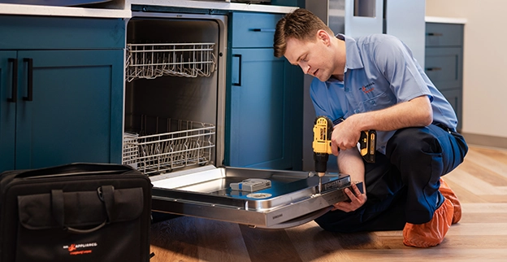
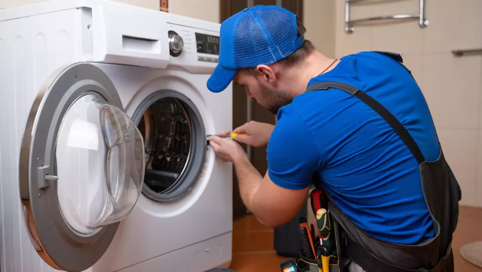
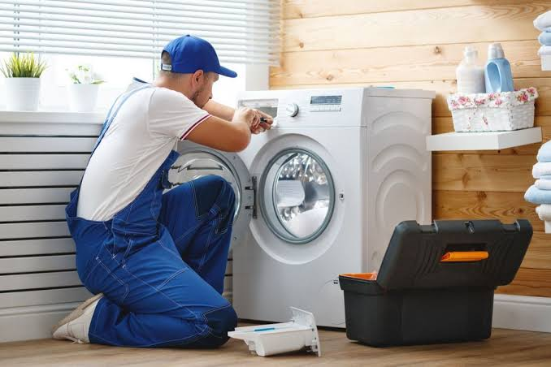

You know what to expect before the visit starts.
Simple, dependable service
Appliance repair that feels clear, honest, and easy to book.
Same Day Service
Prime Appliance USA helps homeowners get refrigerators, washers, dryers, ovens, dishwashers, and ranges working again without the runaround.
- 3000+ Customers helped
- Friendly scheduling and clear updates
- Appointments across Dallas County, Collin County, and Denton County
- Service for major household appliances
Readable design, plain language, and obvious next steps.
We focus on the appliances families depend on every day.
Our Services
Our appliance repair services.
Browse the appliance repair services we offer for the household appliances families use every day.
Refrigerator Repair
Cooling problems, leaks, odd sounds, ice maker issues, and more.
Washer Repair
Drainage issues, spinning trouble, vibration, and door problems.
Dryer Repair
No heat, long dry times, loud operation, and startup failures.
Oven Repair
Uneven baking, no heat, control issues, and broken igniters.
Dishwasher Repair
Standing water, poor cleaning, leaks, and noisy cycles.
Microwave Repair
Heating issues, broken controls, sparks, turntable trouble, and more.
In-home appliance help
Repair support for the appliances your home depends on.
From kitchen appliances to laundry machines, Prime Appliance USA keeps service simple, clear, and easy to schedule.



Why homeowners stay with us
Repair service built around clear communication and dependable help.
Clear communication
We keep the process simple, explain the next steps clearly, and make it easy to reach us when you need service.
Helpful scheduling
From your first call to your appointment window, the goal is to make booking service feel straightforward.
Focused appliance support
We focus on the common household appliances people rely on most, so you can find the right service faster.
What Sets Us Apart
Service that feels straightforward from the first call to the final visit.
We keep the experience simple, respectful, and focused on helping you get your household appliances back in working order.
Respectful communication
We explain the process clearly and keep conversations simple and easy to follow.
Convenient scheduling
Booking service is direct and easy, with appointment support across Dallas County, Collin County, and Denton County.
Focused appliance repair
Our services stay centered on the major home appliances people rely on most every day.
Customer-friendly experience
The goal is to make every step feel dependable, calm, and easier to manage for busy households.
How it works
Three simple steps from problem to repair visit.
-
1
Call and describe the issue
Share the appliance type and the main symptom you are seeing.
-
2
Choose an appointment window
We keep scheduling straightforward so the next step feels clear.
-
3
Get help at home
The visit focuses on diagnosing the problem and moving toward repair.
Reviews
What customers say about working with Prime Appliance USA.
Homeowners value clear communication, dependable scheduling, and service that feels straightforward from start to finish.
★★★★★
"They were easy to reach, explained everything clearly, and made the whole repair visit feel simple."
Local homeowner★★★★★
"The scheduling process was smooth and the service felt professional from the first phone call."
Dallas County customer★★★★★
"Fast communication, polite service, and a much easier experience than I expected."
Collin County customer★★★★★
"My refrigerator stopped cooling and they made scheduling very easy. The communication was clear the whole time."
Denton County customer★★★★★
"They were polite, on time, and helped me understand what was going on with my appliance."
Allen customer★★★★★
"The service felt honest and straightforward. I would call them again for another appliance repair."
Repeat customerCommon questions
Our most asked questions.
What appliances do you work on?
We handle common household appliance repairs including refrigerators, washers, dryers, ovens, ranges, and dishwashers.
What areas do you serve?
Prime Appliance USA serves customers across Dallas County, Collin County, and Denton County.
How do I schedule service?
Call our team directly to schedule service and share the appliance issue you are experiencing.
Contact Prime Appliance USA
Schedule dependable appliance repair today.
If your refrigerator, washer, dryer, oven, range, or dishwasher is giving you trouble, call or email us to get started.